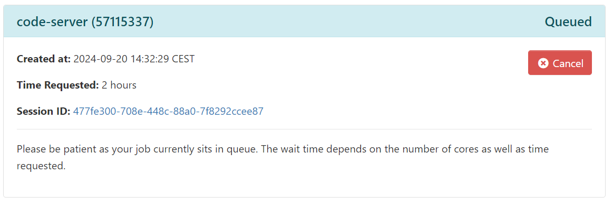
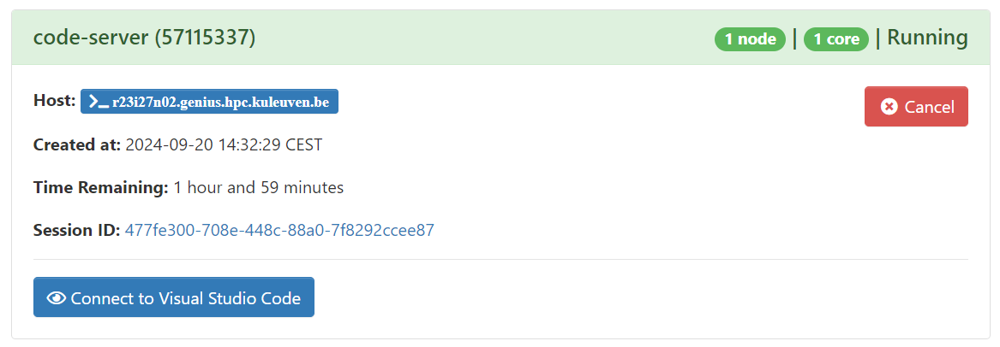
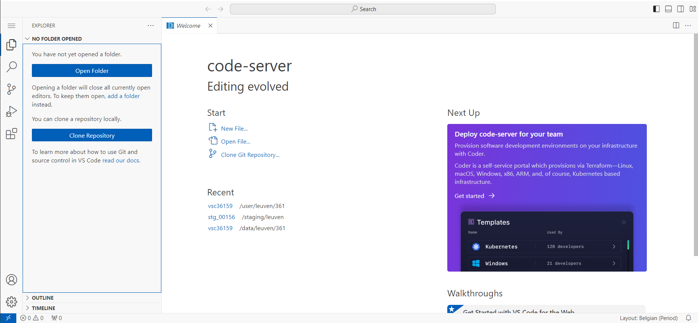

Bio-informatica groepswerk handleiding
Introductie
Somatische varianten zijn genetische veranderingen die niet overgeërfd zijn, maar tijdens iemands leven in specifieke cellen ontstaan. Deze varianten zijn vooral belangrijk in de context van kanker, waar ze een cruciale rol spelen bij het ontstaan en de progressie van de ziekte. Het doel van somatische variant calling is om deze niet-geërfde mutaties te identificeren in DNA sequencing data van tumoren en andere stalen.
Dit proces omvat:
- Sequencing van tumorweefsel of bloedcellen van een patiënt.
- Alignment van de sequentiedata aan een referentiegenoom.
- Identificatie van posities waar de tumorsequentie verschilt van het referentiegenoom. Dit noemen we varianten.
- Filteren van deze varianten om
Het belang van somatische variant calling ligt in verschillende gebieden:
- Kankerdiagnostiek: Het helpt bij het identificeren van de specifieke mutaties die een rol spelen in een individuele tumor.
- Gepersonaliseerde behandeling: Kennis van de somatische varianten kan helpen bij het kiezen van de meest effectieve behandeling voor een patiënt.
- Onderzoek: Het draagt bij aan ons begrip van de genetische basis van kanker en andere ziekten.
- Monitoring: Het kan worden gebruikt om de evolutie van een tumor in de tijd te volgen en de respons op behandeling te evalueren.
In dit groepswerk doorlopen we de stappen die nodig zijn om somatische variant calling uit te voeren. We leren de basisprincipes van sequentieanalyse en specifieke uitdagingen van het identificeren van somatische mutaties. Hierbij reflecteren we bij elke stap over de verkregen resultaten.
VSCode op de Vlaamse Supercomputer Centrum infrastructuur
We kunnen de VSC (Vlaamse Supercomputer Centrum) infrastructuur op verschillende manieren gebruiken. De meest gebruiksvriendelijke manier is het KU Leuven OnDemand platform. Om in te loggen op dit platform doorloop je volgende stappen:
- Surf met je browser naar https://ondemand.hpc.kuleuven.be
- Kies hier de optie om in te loggen met een VSC account: “Partner organizations: VSC account”
- Log in met je UHasselt account
- Bij de vraag “Authorize vsc-challenge?” antwoord je “Authorize”
Je bent nu ingelogd op het KU Leuven OnDemand platform. Hiermee kan je vanuit je webbrowser een aantal populaire applicaties opstarten op de Vlaamse SuperComputer. Meer achtergrond kan je vinden in de handleiding.
Voor het groepswerk gaan we gebruik maken van de Visual Studio Code (VS Code) applicatie. Dit is een populaire applicatie om code te schrijven die een ingebouwde bestands browser en terminal vensters heeft. Om VS Code te starten via het OnDemand platform doorloop je de volgende stappen.
- Klik op het “code-server” icoon.
- Er verschijnt een formulier met een aantal opties. Controleer volgende opties en pas aan indien nodig.
- Account: lp_h_edu_bioinformatics_2024
- Number of hours: 1
- Number of cores:: 2
- Required memory per core in megabytes:: 3400
- Klik op “Launch”
- Een overzicht van jouw recent sessies verschijnt met bovenaan de VS Code sessie met status “Queued”

Nu moet je even wachten tot de VS Code sessie gestart is. Normaal duurt dit maar enkele seconden. Het zou mogelijk zijn dat je ook wat langer moet wachten als de VSC infrastructuur druk bezet is. Wanneer de sessie gestart is verschijnt “Running” en wordt het kader groen:

Klik nu op “Connect to Visual Studio Code”. De VS Code interface verschijnt.

Introductie tot Linux Shell/Bash
Wat is een Shell?
Een shell is een programma dat een interface biedt voor gebruikers om met het besturingssysteem te communiceren. De meest voorkomende shell in Linux-systemen heet Bash (Bourne Again SHell). Wanneer je de opdrachtregel gebruikt, typ je opdrachten in de shell.
Basisbegrippen
Opdrachtprompt: Hier typ je je opdrachten. Het eindigt meestal met een
$-teken.Opdrachten: Dit zijn instructies die je aan de computer geeft.
Argumenten: Aanvullende informatie die je aan een opdracht geeft.
Opties: Wijzigen het gedrag van opdrachten, meestal beginnend met een streepje (
-).
Basisopdrachten
pwd (Print Working Directory)
Toont je huidige locatie in het bestandssysteem.
$ pwd
/home/gebruikersnaamls (List)
Geeft een lijst van bestanden en mappen in de huidige directory.
$ ls
Documenten Downloads Afbeeldingen MuziekOpties:
ls -l: Lang formaat, toont meer detailsls -a: Toont verborgen bestanden (die beginnen met een punt)ls -lh: Toont de grootte van de bestanden (in de kolom) in een leesbaar formaat (K: kilobyte,M: megabyte,G: gigabyte).
cd (Change Directory)
Verplaatst je naar een andere directory.
$ cd DocumentenSpeciale directories:
.: Huidige directory..: Bovenliggende directory~: Thuisdirectory van de gebruiker
mkdir (Make Directory)
Maakt een nieuwe directory aan.
$ mkdir NieuweMapcp (Copy)
Kopieert bestanden of directories.
$ cp bestand.txt Documenten/Om een directory en zijn inhoud te kopiëren, gebruik de -r (recursief) optie:
$ cp -r MapA MapBmv (Move)
Verplaatst of hernoemt bestanden en directories.
$ mv bestand.txt Documenten/
$ mv oudenaam.txt nieuwenaam.txtrm (Remove)
Verwijdert bestanden of directories. Wees voorzichtig met deze opdracht!
$ rm bestand.txtOm een directory en zijn inhoud te verwijderen, gebruik de -r optie:
$ rm -r MapNaamcat (Concatenate)
Toont de inhoud van een bestand.
$ cat bestand.txtecho
Print tekst naar het scherm.
$ echo "Hallo, Wereld!"
Hallo, Wereld!Opdrachtstructuur
De meeste opdrachten volgen deze structuur:
opdracht [opties] [argumenten]Bijvoorbeeld:
$ ls -l DocumentenHier is ls de opdracht, -l een optie, en Documenten een argument.
Tips
- Gebruik de pijltjestoetsen omhoog en omlaag om door je opdrachtgeschiedenis te navigeren.
- Gebruik Tab voor automatische aanvulling van bestands- en mapnamen.
- Gebruik
mangevolgd door een opdrachtnaam om de handleiding te zien (bijv.man ls).
Oefenopdrachten
- Maak een directory genaamd “BioinformaticaCursus” in je thuisdirectory.
- Maak binnen “BioinformaticaCursus” drie subdirectories: “Data”, “Scripts” en “Resultaten”.
- Maak een leeg bestand genaamd “notities.txt” in de “BioinformaticaCursus” directory.
- Toon de inhoud van “BioinformaticaCursus” in lang formaat.
- Verplaats “notities.txt” naar de “Resultaten” directory.
- Kopieer “notities.txt” van “Resultaten” naar “Data”.
- Verwijder het “notities.txt” bestand uit de “Data” directory.
Open de map van jouw groepje in de VSCode editor:
/staging/leuven/stg_00156/bioinformatica-groepswerk/groep01
Kwaliteitscontrole met FastQC
Doel
Het hoofddoel van FastQC is om een snelle kwaliteitscontrole uit te voeren op ruwe sequentiedata afkomstig van high-throughput sequencing pijplijnen. Het helpt bij het identificeren van problemen die kunnen voortkomen uit de sequencer zelf of de bibliotheekvoorbereiding.
Opdrachten
Laad de FastQC module
module load FastQC/0.11.8-Java-1.8.0_162Voer FastQC uit op beide read-bestanden
fastqc naam_van_fastq_bestand.fastq.gzHet FastQC rapport wordt gegenereerd, dit duurt enkele seconden. Hierna zie je het rapport (bv naam_van_fastq_bestand_fastqc.html) verschijnen in de linkerbalk. Om het rapport te openen moeten we het eerst downloaden (rechstklikken + download).
Het interpreteren van het FastQC HTML-rapport
Basic Statistics: Geeft een overzicht van het bestand, waaronder totaal aantal sequenties, sequentielengte en GC-gehalte.
Per base sequence quality: Toont hoe de kwaliteitsscores (Phred scores) verlopen over de lengte van de reads. De blauwe lijn geeft de gemiddelde kwaliteitscore mee over alle reads. Normaal neemt de kwaliteitscore af met de lengte van de reads. Bij een goede gelukte sequencing blijft het gemiddelde ook naar het einde van de reads toe voldoende hoog.
- Groen gebied: Goede kwaliteit
- Oranje gebied: Redelijke kwaliteit
- Rood gebied: Slechte kwaliteit
Per sequence quality scores: Geeft de verdeling van kwaliteitsscores over alle sequenties. We verwachten een normale verdeling met een gemiddelde hoger dan 30.
Per base sequentie-inhoud: Toont de verhoudingen van basen op elke positie.
Per sequentie GC-inhoud: Vergelijkt de waargenomen GC-inhoudverdeling met een theoretische normale verdeling.
Per base N-inhoud: Toont het percentage van basen op elke positie die niet konden worden bepaald (N).
Sequentielengteverspreiding: Voor de meeste platformen zou dit een scherpe piek moeten zijn.
Sequentieduplicatieniveaus: Hoge duplicatieniveaus kunnen duiden op PCR-bias.
Overgerepresenteerde sequenties: Lijst van sequenties die vaker voorkomen dan verwacht.
Adapter-inhoud: Toont de aanwezigheid van vaak gebruikte adapters in je bibliotheek.
Opdrachtvragen:
- Hoeveel sequenties/reads zijn er in beide FASTQ files aanwezig?
- Wat is de gemiddelde kwaliteitsscore over alle basen en reads?
- Hoe verandert de kwaliteitsscore over de lengte van de reads?
Read Mapping met BWA
BWA (Burrows-Wheeler Aligner) wordt gebruikt om de reads te aligneren tegen een referentiegenoom.
Laad de BWA module
module load BWA/0.7.17-GCC-10.3.0Aligneer de reads
REF=/staging/leuven/stg_00156/references/hg38.fa
bwa mem -t 2 $REF naam_van_fastq_bestand_r1.fastq.gz naam_van_fastq_bestand_r2.fastq.gz > aligned.samPas de namen van de FASTQ bestanden aan naar de namen van jouw bestanden in het bovenstaande commando.
module load SAMtools/1.13-GCC-10.3.0
samtools sort aligned.sam -o aligned.sorted.bam
samtools index aligned.sorted.bamsamtools flagstat aligned.sorted.bamOpdrachtvragen:
- Hoeveel reads zijn er gealigneerd tegen het referentiegenoom?
- Hoeveel van deze reads vormden een correct paar (beide reads mappen met correct orientatie en afstand op hetzelfde chromosoom)?
Variant Calling met BCFtools
BCFtools wordt gebruikt om varianten te identificeren uit de uitgelijnde reads.
# Roep varianten aan
bcftools mpileup -f referentiegenoom.fasta monster1.sorted.bam | bcftools call -mv -Ob -o monster1.raw.bcfVariant Filtering
VCFtools kan worden gebruikt om de varianten te filteren op basis van verschillende criteria.
# Zet BCF om naar VCF
bcftools view monster1.raw.bcf > monster1.raw.vcf
# Filter varianten
vcftools --vcf monster1.raw.vcf \
--minQ 30 \
--min-meanDP 10 \
--max-missing 0.8 \
--recode --recode-INFO-all \
--out monster1.gefilterdVariant Annotatie met SnpEff
Stap 1: Installeer SnpEff
wget https://snpeff.blob.core.windows.net/versions/snpEff_latest_core.zip
unzip snpEff_latest_core.zipStap 2: Download de Human Genome Database
java -jar snpEff.jar download -v hg38Stap 3: Voer SnpEff uit
java -Xmx4g -jar snpEff.jar hg38 input_varianten.vcf > geannoteerde_varianten.vcfStap 4: Interpreteer de Resultaten
Kijk naar het ANN veld in de output VCF voor gedetailleerde annotaties.
Opdrachtvragen
- Hoeveel varianten met HOGE impact heb je gevonden? Wat voor soort varianten zijn dit?
- Vind een missense variant. Wat is de aminozuurverandering? In welk gen kwam het voor?
- Zijn er varianten in bekende ziekte-geassocieerde genen?
- Wat is het meest voorkomende type variant in je dataset?
- Kun je varianten vinden die de eiwitfunctie kunnen beïnvloeden? Leg uit waarom je denkt dat ze impactvol kunnen zijn.